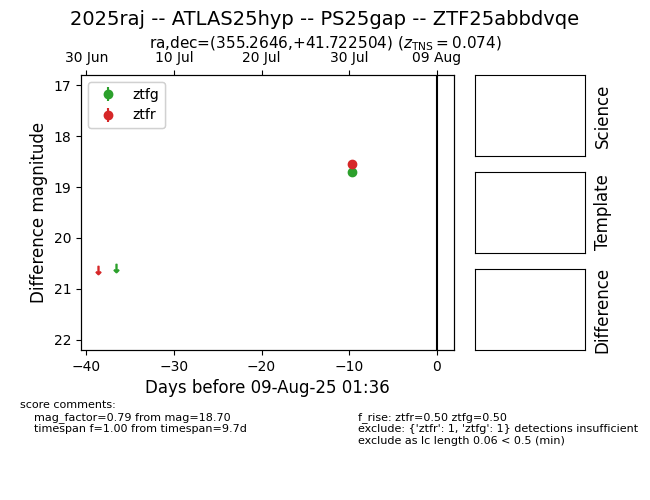

Target 2025raj at 2025-08-11 14:55, see:
FINK: fink-portal.org/2025raj
Lasair: lasair-ztf.lsst.ac.uk/objects/2025raj
ALeRCE: alerce.online/object/2025raj
TNS: wis-tns.org/object/2025raj
YSE: ziggy.ucolick.org/yse/transient_detail/2025raj
alt names
ZTF25abbdvqe (ztf,fink)
2025raj (tns,yse)
ATLAS25hyp (atlas)
PS25gap (panstarrs)
coordinates:
equatorial (ra, dec) = (355.2646,+41.72250)
galactic (l, b) = (109.1054,-19.25193)
photometry
last atlasc=18.91, atlaso=18.94, ztfg=19.20, ztfr=19.03
2 atlasc, 5 atlaso, 3 ztfg, 2 ztfr detections
